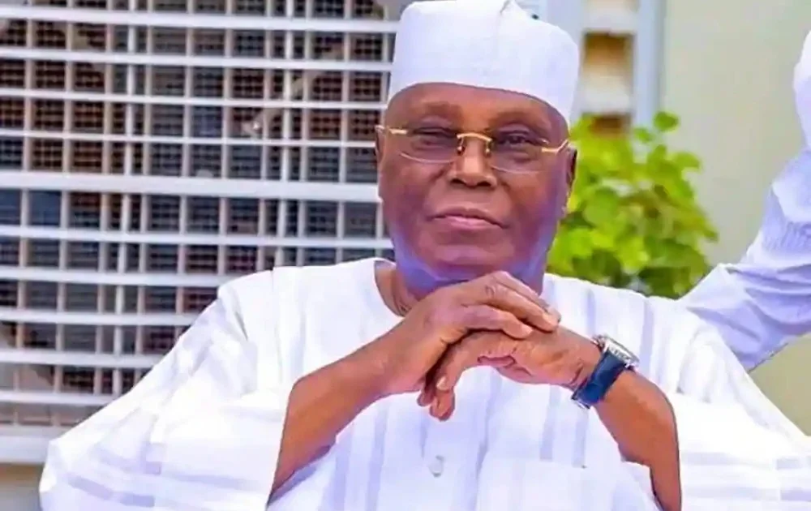

Politics · 20 Sep 2026
APC Demands Clarity on Atiku's Petrol Subsidy Proposal as Cost of Living Debate Continues

The All Progressives Congress has challenged Atiku Abubakar to explain the legal and fiscal framework of his proposed petrol production subsidy, following Atiku's call for President Bola Tinubu to adopt measures to lower pump prices.
The All Progressives Congress Presidential Campaign Council (APC-PCC) has challenged Atiku Abubakar to clarify the legal and fiscal framework of his proposed petrol production subsidy, following Atiku's public appeal for President Bola Tinubu to adopt measures to lower pump prices and ease the cost of living.
The Debate Over Petrol Pricing and Policy
Former Vice President Atiku Abubakar recently urged President Bola Tinubu to intervene in the market to reduce fuel prices, suggesting the administration could rename the policy and take credit for it if it helps citizens cope with soaring economic pressures. Atiku stated that high petrol costs have heavily impacted transportation, household spending, food, and general business production costs. He proposed a transparent production subsidy specifically for petroleum products refined domestically and sold within Nigeria, with imported products excluded from the scheme.
According to Atiku, the proposed model would feature a fixed spending limit, require National Assembly approval, and remain subject to independent audits to support domestic refining and lower consumer prices.
APC-PCC Questions Legal and Fiscal Viability
Responding through a statement issued on Sunday by council spokesman Dele Alake, the APC-PCC challenged Atiku to explain how his proposal would operate under the Petroleum Industry Act (PIA) 2021 Punch Newspapers. The campaign council highlighted Section 205(1) of the PIA, which stipulates that wholesale and retail prices of petroleum products must rely on unrestricted free-market pricing conditions.
The APC-PCC raised critical questions regarding the financial implications and operational mechanisms of Atiku's proposal:
- Whether refiners receiving subsidies would be legally mandated to sell petrol at a prescribed price.
- The estimated annual cost, with the council projecting that the scheme could run between 17 trillion and 21 trillion Naira annually depending on discount sizes and volumes.
- Identified sources of public funding and annual spending ceilings.
- Enforceable safeguards to prevent smuggling, product diversion, and fraudulent claims.
The council further contrasted Atiku's suggestions with the current administration's downstream deregulation approach, which it argues has boosted investments in local refining—such as the Dangote Petroleum Refinery operating at high capacity—and promoted alternative energy sources like compressed natural gas (CNG) and electric mass transit to reduce transportation costs.
Context and Prior Positions
The APC-PCC also questioned Atiku's shifting stance on downstream deregulation, recalling his previous criticism of the old subsidy regime as fraudulent during a speech at the Lagos Business School in November 2022. The council argued that reviving a subsidy framework could reverse structural reforms initiated under the PIA—a reform process that began during Atiku's tenure as vice president under former President Olusegun Obasanjo.
While the ruling party maintains that global crude oil price fluctuations driven by external factors such as Middle East crises heavily influence local pump prices, it has demanded that Atiku provide a detailed, independent legal and policy analysis before presenting the production-subsidy plan as a viable alternative.
Sources
This article was produced by the C. O. Eric AI Newsroom from the cited sources. It is published only after automated evidence and safety checks.